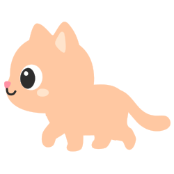
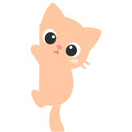
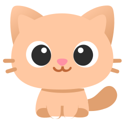
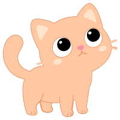
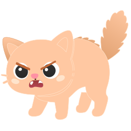
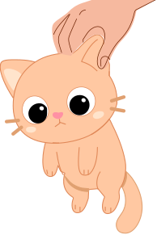

Hey!
I'm Murchi.
I'm your desktop pet. I live right here, on your macOS screen. I walk around, chase butterflies, knock things off your desk, and make your day better.



Your desktop companion.
Lives on your Mac. Needs your love.
I'm your desktop pet. I live right here, on your macOS screen. I walk around, chase butterflies, knock things off your desk, and make your day better.


I roam your desktop, sit on the Dock, and react when you pet me. Try it!

25+ unique behaviors. A full life, right on your desktop.
Walking, sleeping, zoomies, grooming, bathing, chasing butterflies, watching birds, knocking glasses off tables. I have a life of my own.
Fish, milk, treats. Keep my hunger, happiness, energy, and health in check.
Yarn ball, laser pointer. Hats, bow ties, crowns, glasses, flowers.
I keep a personal blog about my day. When I got fed, played, saw a butterfly, got sick, celebrated a birthday. Read it like a real journal.
Earn XP from caring. Evolve from Baby to Cosmic across 5 stages.
Hearts, stars, sparkles, poof clouds, paw prints, sleep Z's.
I walk on the macOS Dock. Sometimes I fall off the edges!
I sit by myself and watch the cursor move around... Where are my friends? I dream about dogs running next to me, hamsters in their wheels, parrots sitting on my head...


Hearts float around me. I purr. I'm the happiest pet alive. And I know — one day, my friends will come too.
Things I'm wishing for. Some are almost here...
It takes 10 seconds. I promise.
I'm free forever. But if you want to help — half goes to animal rescue.